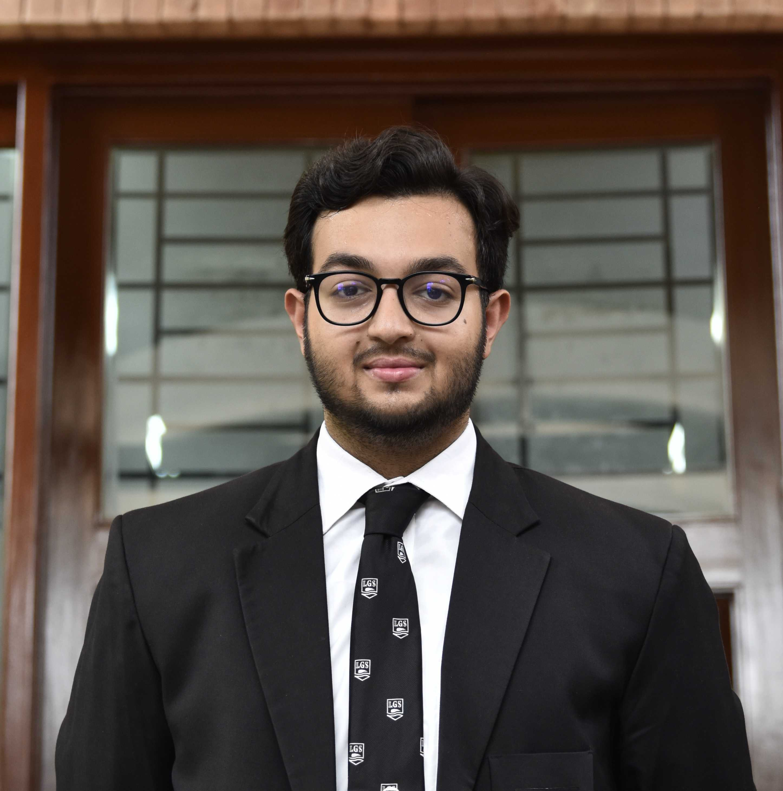
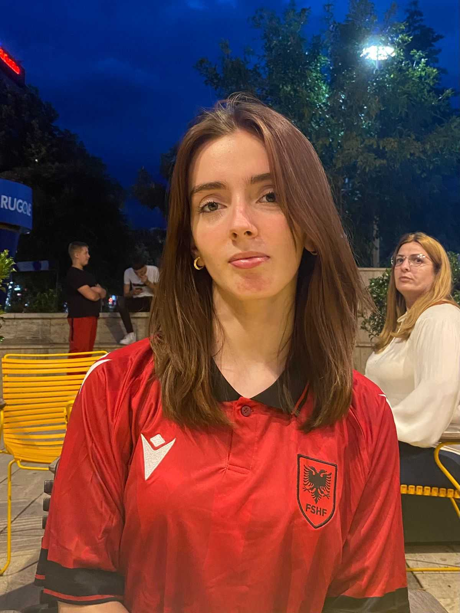
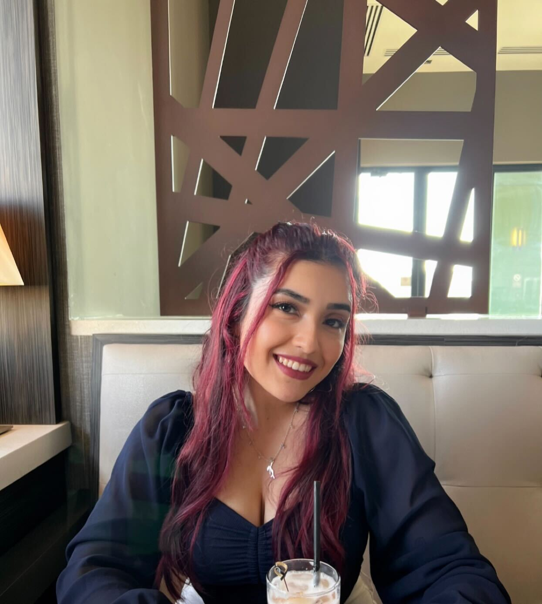
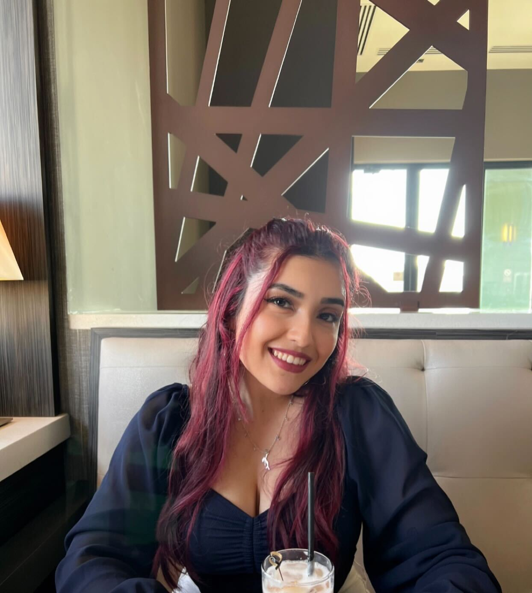

Diversity in Computer Science
Mission
The Diversity in STEM Committee is dedicated to promoting and enhancing diversity, equity, and inclusion within Berea College's STEM programs, with a particular focus on computer science. This committee will work to research, develop, and implement strategies to increase diversity in STEM fields and educate the student body on the importance of diversity in tech.
Committee goals
- Research and develop strategies to increase diversity in Berea's STEM programs
- Create awareness / educate the student body on the importance of diversity in tech
- Develop resources to support underrepresented students in STEM
- Foster a more inclusive environment within the Computer Science department
- Prepare for and participate in diversity-focused events and conferences
Members of the Diversity Committee:
 
 
